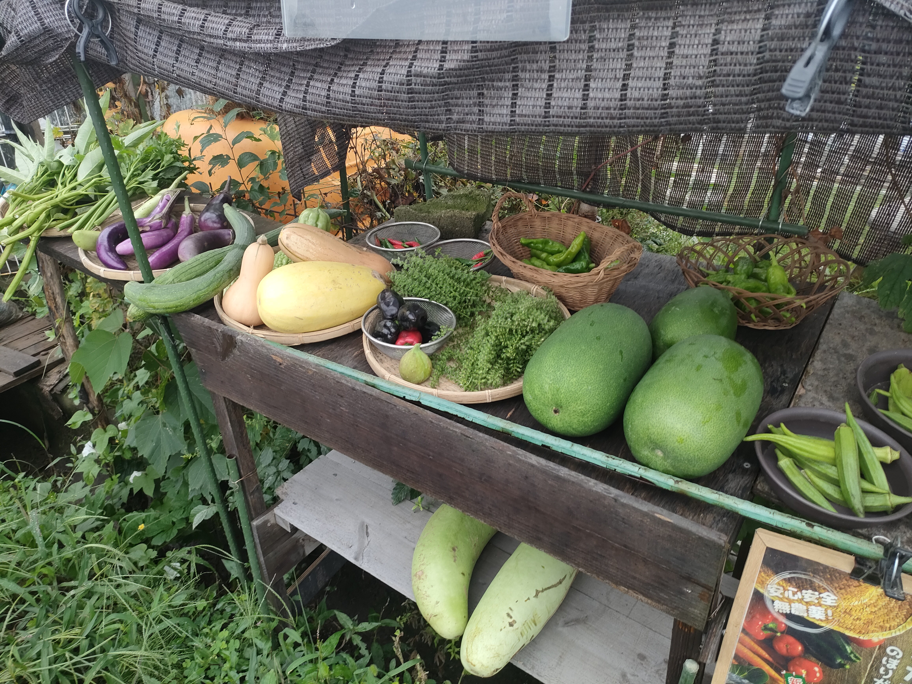

2026年11月号
おさんぽマルシェ新聞
野菜を見る目も、共に育つ？

今月のピックアップ写真
直売所に並ぶふぞろいな野菜。形も大きさも違う野菜を、どう見るかが今月の入口。おさんぽ便り
畑から直売所をやるようになって、最近では畑を手伝ってみたいなんていう人もあらわれるようになってきた昨今です。
そうなると今まで一人でやって来たからか、気づきもでてきます。
オラ自身、お手伝いした時は使った道具を元の場所に戻せてたっけ？
自分の都合で動いてなかったか？.. 手が空いた時には周りを見渡せる余裕なんてあっただろうか？ などなど...
どれも、慣れたら特別むずかしいことではないですけど、最初から自然にできたわけではありません。
勿論覚えるには、教えて頂く事も大事ですが、オラは昭和世代なので、こういう暗黙の「ルール」や、自ら気づく素養は「モラル」だと思ってきました。
ただ最近、少し違う言葉が浮かぶようになった。
それが「ならわし」です。
「習わし（ならわし／慣わし）」とは、昔からその社会や地域、家庭などで決まって行われてきたしきたり、習慣、風習のことだそうです。
1 / 5